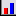
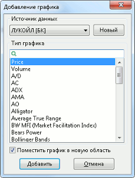
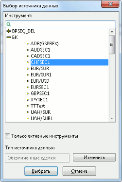
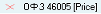
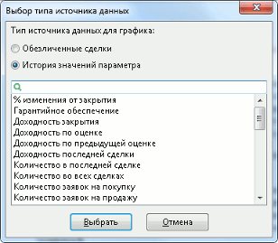

Добавление графика в диаграмму
Добавление графика в диаграмму осуществляется одним из следующих способов:
- Нажать кнопку  на панели инструментов «График».
- Выбрать пункт контекстного меню «Добавить график (индикатор)…» в активном графике.
- Выбрать пункт меню программы Действия/Добавить график (индикатор)… при активном окне графика.
- Нажать кнопку «Insert» при активном окне графика.
- Нажать кнопку «Добавить» в левой части окна редактирования графика.
- График добавляется в новую область построения.
- Индикаторы Alligator, AMA, Bollinger Bands, Envelopes, Fractals, Ichimoku, Parabolic SAR, Price Channel добавляются на график цены выбранного инструмента. Остальные индикаторы добавляются в новую область построения.
Окно добавления графика в диаграмму содержит следующие настройки:

- «Источник данных» – выбор инструмента и параметра, используемых в качестве источника данных для графика. В списке доступны все источники, отображаемые на данном графике. Для добавления нового источника данных нажмите кнопку «Новый»:
Окно выбора нового источника данных содержит следующие настройки:

- «Инструмент» – выбор инструмента из списка доступных. По умолчанию выбирается инструмент, по которому в диаграмме построен график цены.
- «Только активные инструменты» – позволяет исключить из списка бумаги или контракты, не имеющие заявок, сделок или открытых позиций.
- Если выбранный инструмент не найден в справочнике, то выводится предупреждение вида: «При создании диаграммы <…> не удалось создать график <…> для инструмента <…>, так как данный инструмент отсутствует в справочнике инструментов». Легенда такого графика выглядит следующим образом:  .
- «Тип источника данных» – выбор источника данных для графика. Для смены источника данных нажмите кнопку «Изменить».

- Выбор Таблицы обезличенных сделок позволяет строить график цены и объема сделки (рекомендуется).
- Выбор Таблицы истории значений параметров дает возможность строить графики по большему количеству параметров, список которых отображается ниже.
- Рекомендации к выбору типа источника данных:
- В Таблице истории значений параметров учитываются изменения
параметров через определенные периоды времени, поэтому некоторые сделки
могут быть пропущены. Для построения графика цены и объема сделок
используйте источник «Таблица обезличенных сделок».
- Данные в Таблице истории накапливаются в течение
сеанса связи с сервером и могут иметь пропуски в тех периодах времени, когда
связь с сервером отсутствовала. Чтобы получить непрерывный ряд данных,
поставьте флажок «Получать пропущенные данные» в пункте меню
Система / Настройки / Основные настройки..., раздел «Программа» / «Сохранение
данных».
- Данные из Таблицы истории не накапливаются в архиве и недоступны для
построения графика за несколько дней.
- При построении графика по «Таблице обезличенных сделок» данные берутся
из этой таблицы, если пользователем была создана хотя бы одна таблица такого
типа. При отсутствии Таблицы обезличенных сделок данные заказываются с сервера в
виде интервалов требуемой дискретности, для минимизации
трафика.
- «Тип графика» – выберите тип графика из предлагаемого списка.
Значение «Price» соответствует графику цены последней сделки, «Volume» – графику объема последней сделки. Остальные типы графиков представляют собой различные индикаторы технического анализа.
При установленном признаке «Поместить график в новую область» для нового графика на диаграмме создается новая область построения.
См. также: